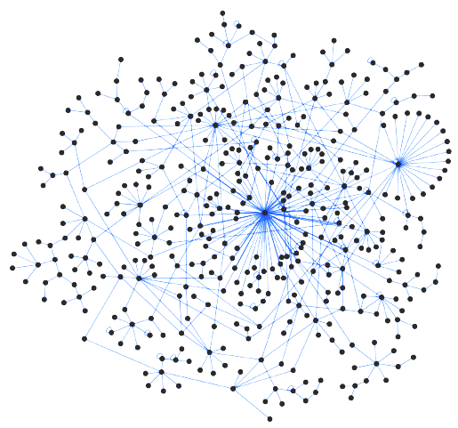
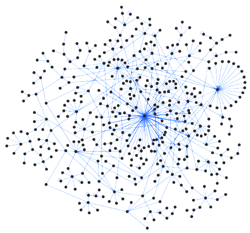

Rice Orfeome and Interactome Project
Since 2014, the Yu and McCouch labs at Cornell University have been collaborating with Drs. Mizuno and Kikuchi at National Agriculture and Food Research Organization (NARO) in Japan to generate:
- a comprehensive single-colony fully-sequence-verified rice ORFeome library and
- a whole-proteome rice interactome.
As a pilot study, we received ~3,000 full-length cDNA clones from NARO in 2014. We have successfully generated the first large-scale rice ORFeome (for ~2,000 genes) and an interactome by screening all ~2,000x~2,000 pairs:

Since 2014, the Yu and McCouch labs at Cornell University have been collaborating with Drs. Mizuno and Kikuchi at National Agriculture and Food Research Organization (NARO) in Japan to generate:
- a comprehensive single-colony fully-sequence-verified rice ORFeome library and
- a whole-proteome rice interactome.
As a pilot study, we received ~3,000 full-length cDNA clones from NARO in 2014. We have successfully generated the first large-scale rice ORFeome (for ~2,000 genes) and an interactome by screening all ~2,000x~2,000 pairs:
